w00019 t14 首个垂直切片的静态稿：在 nb-story 查看器里加了一页“问答”，外壳、阅读位置、右侧抽屉都是真的；对话视图是 nb-agent-ui 现在的实现，会话列表、答案卡片、出处的显示是照计划搭的草稿。“这本书讲了什么？”与“你好”两段是书库里的真实问答记录，经 nb-agent-ui 的 harness 适配器原样回放；追问、文字回复与运行中是照真实格式合成的。
勾上的进 t14；没勾的留在 t11 渐进补齐。只列 nb-agent-ui 这边的事；nb-story 自己的问题记在下面的“搭稿时发现的问题”，转给 w00024 t13。推荐的五项是问答页上线就会被看到的。
选中、新建；运行中、已中断、出错三种标记；宿主给的第二行说明与提醒行（例如“读到 38.12，早于你现在的位置”）；加载中、空、出错三种状态。宿主决定放左栏还是下拉（图 01、13 到 16）。
推荐：没有它问答页没法切换对话图 01 最后一条回复下面的黄色一行。草稿是把它塞进注入的 Markdown 里假装的；真实做法要接上扩展点 entries，宿主登记条目渲染器。
图 04：第二轮第一次交卷被退回，展开过程后它画成了和最终答案一模一样的整张卡片，只差一个出处，分不清哪张是作数的。改为：结果节点的失败调用不画宿主组件，按普通步骤行显示“交卷 · 退回：41.20 不是读过的原文段落”。
推荐：nb-story 每次退回都会这样，主应用的结果工具也一样图 05：真实模型的思考摘要写成 **Finding 南嘉鱼 and the secret matrix**，步骤行把星号原样显示。步骤行只显示第一行纯文字，应先去掉 Markdown 标记。
图 05 的“查了 1 次人物，查了 2 次关系与秘密，读了 1 段原文”：groupPhrase 现在只拿到次数，写不出 w00024 定的“读了第 33–37 章”。改为同时收到这一组的调用。
图 08：新对话只有一句“还没有消息”。宿主可以换成自己的内容，例如几个示例问题、说明会按哪个位置与做法回答。
不推荐这次做：顶上那行已经说了位置，先上线再看每条回复下面的用时、tokens、缓存，和角色行的模型名。对读小说的人可能是噪音；视图加一个开关由宿主决定。
不推荐这次做：问答一轮几十万 tokens，现阶段看得到用量是有用的列表行上的更多菜单。nb-story 已有 nbstory qa rm，网页上还没有入口。
canMutateHistory: false，按钮不出现（图里回复只有“复制”）。entries，由 nb-story 登记条目渲染器。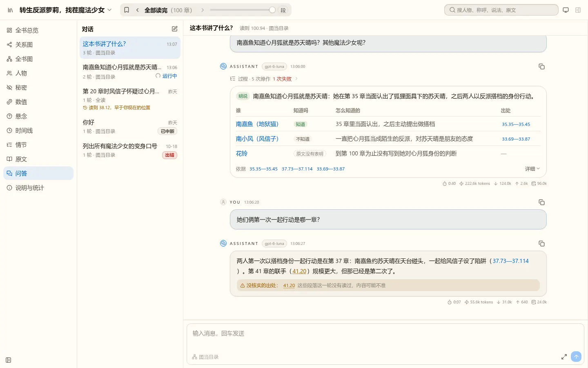
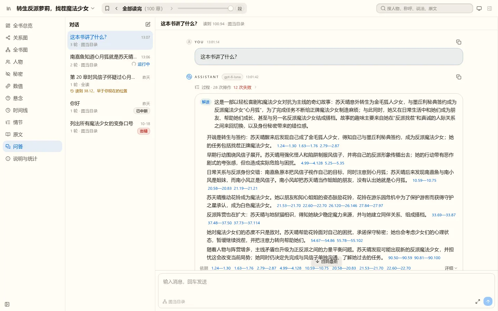
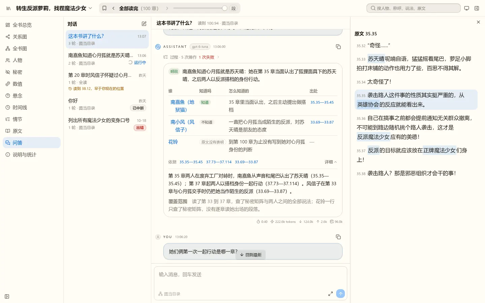
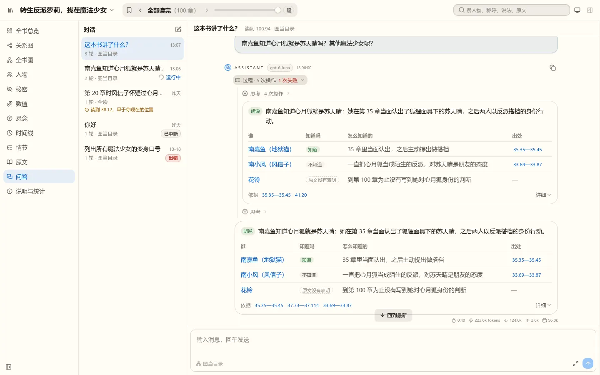
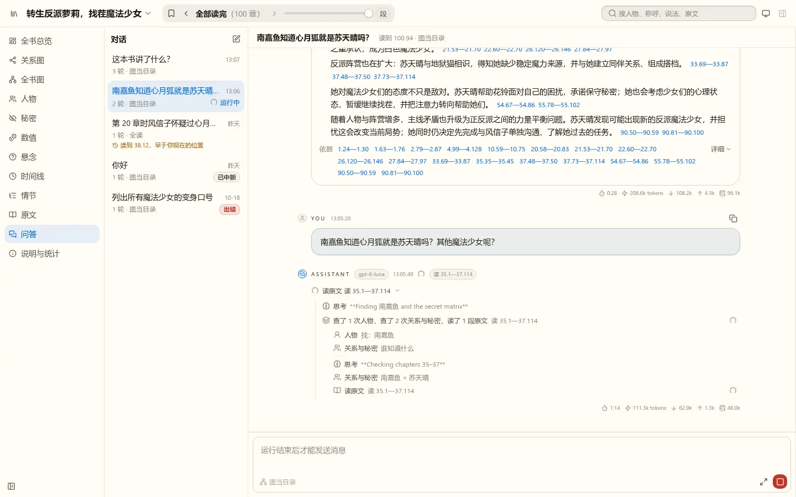
processDisclosure="live"），角色行旁是正在做的那一步；输入框“运行结束后才能发送消息”，右下是停止。思考摘要的 ** 原样显示，工具组短语只能按次数写（两道待定项）。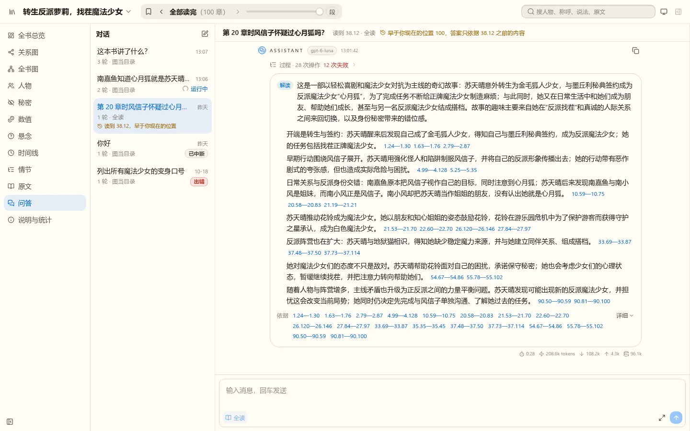
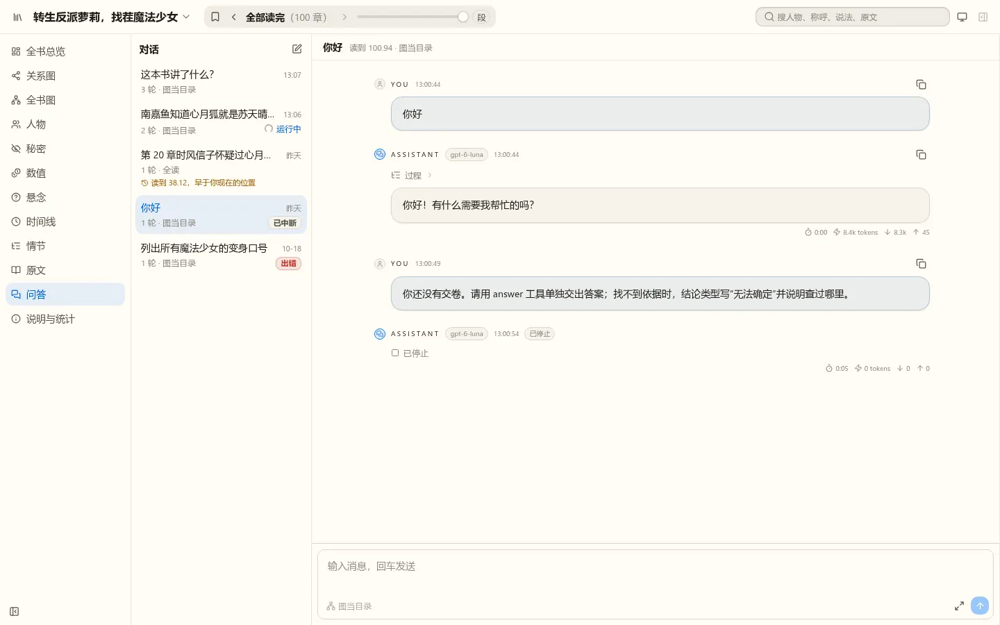
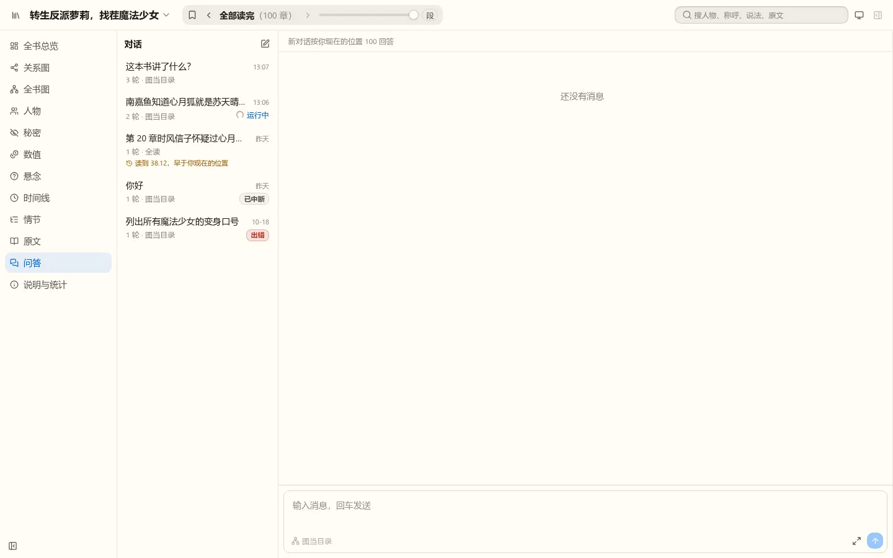
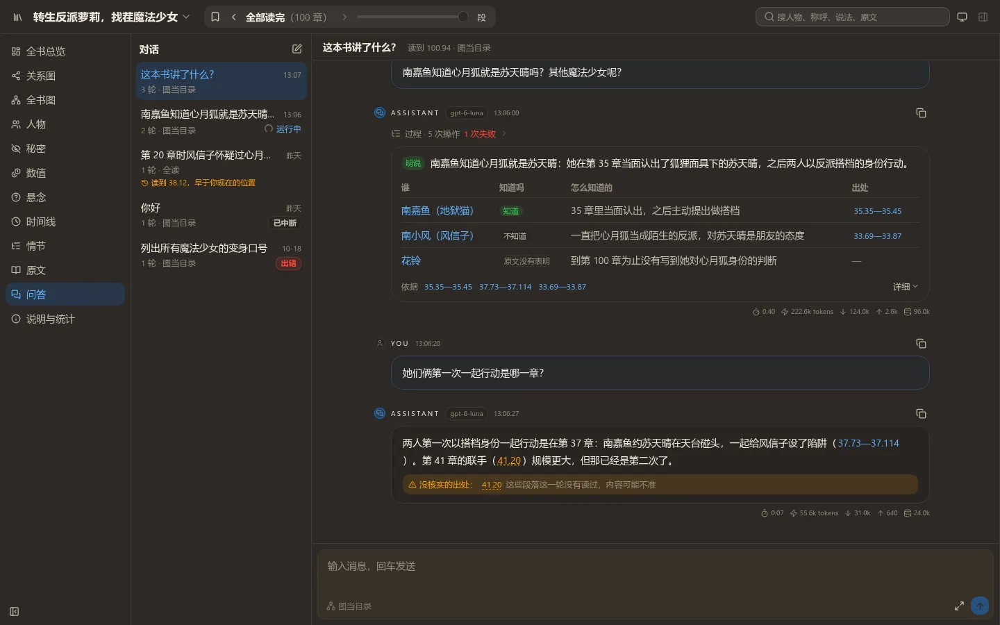
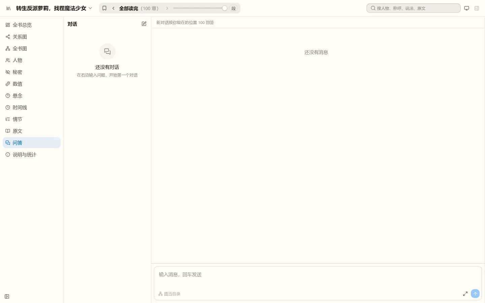
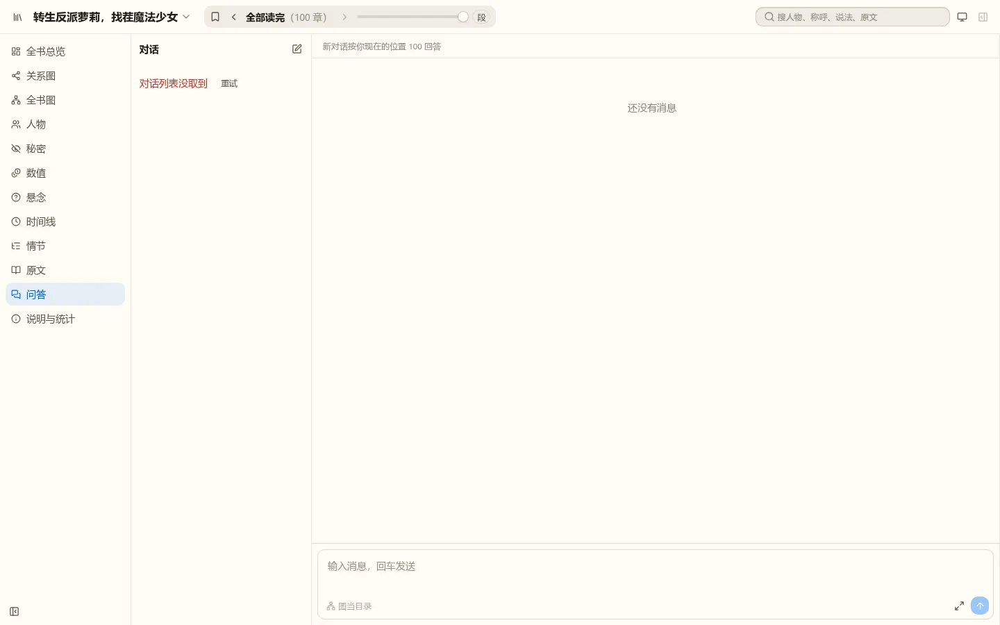
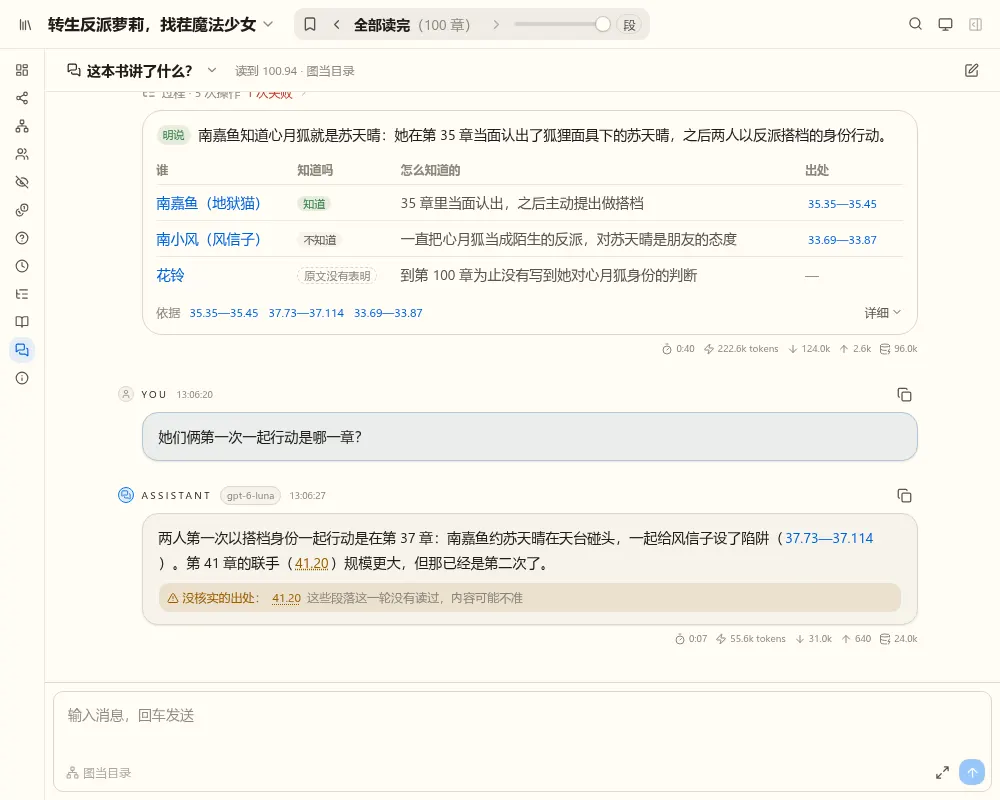
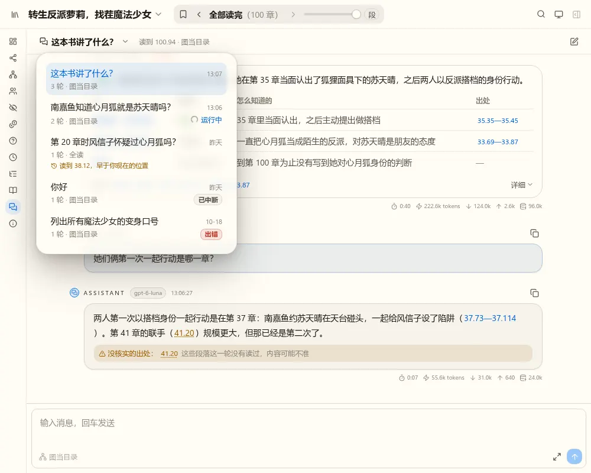
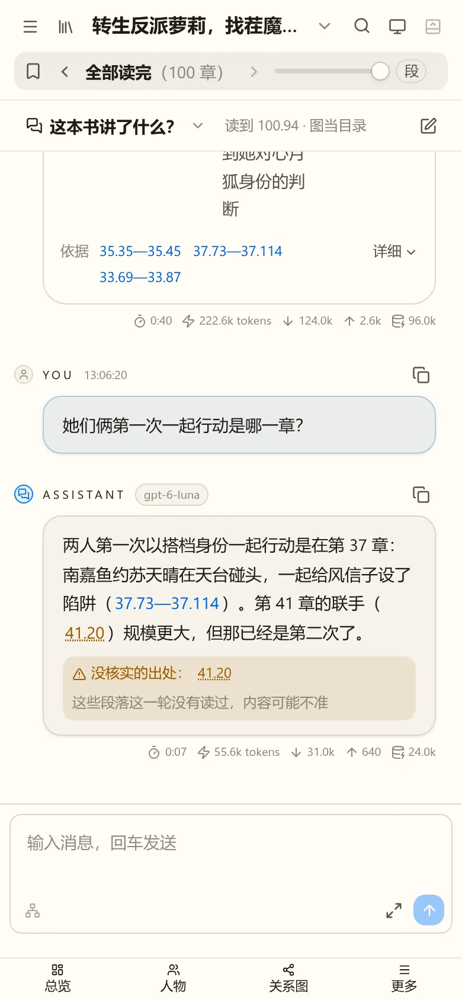
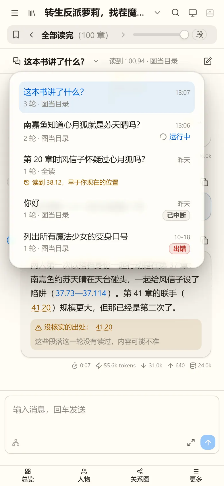
| 问题 | 哪一边 | 去向 |
|---|---|---|
nb-story 的工具 read 与 nb-agent-ui 内置的文件读取工具同名，注册表报冲突、整页挂不上（t13 定的行为）。nb-story 没有文件与命令工具，内置的工具登记整份不要，只留角色、输入框、消息操作三份。 | nb-story | w00024 t13 计划写明；nb-agent-ui README 已有过滤内置项的写法 |
| 引擎催模型交卷的那句话写成了用户消息（图 07）。应写成提醒（system reminder），视图会画成淡色一行。 | nb-story | w00024 t13；先查现在的引擎是否还这样写 |
| 答案卡片的依据很多时折成几行（图 02，18 处）。w00024 决定 8 写的是“一行可点的依据出处”，要定超出一行时怎么收。 | nb-story | w00024 t13 的答案卡片 |
| 超出“一问最多读 20 章”被拒的读原文是工具错误，整轮摘要显示成红色的“12 次失败”（图 02）。这是预期内的限额，读者看着像出了故障。可以改成不算错误的结果（例如“已到上限，没读”），或者摘要里另算一类。 | nb-story | w00024 t13：先定限额被拒算不算失败 |
| 答案里的人名是字符串（“南嘉鱼（地狱猫）”），点开人物卡要先按名字找到对象 id；草稿用的是写死的对照表。 | nb-story | w00024 t13：问答页按名字查对象，或让 answer 的参数带对象 id |
| 被退回的交卷在过程里画成整张卡片（图 04）。 | nb-agent-ui | 待定题 |
| 思考摘要的 Markdown 标记原样显示（图 05）。 | nb-agent-ui | 待定题 |
groupPhrase 只拿到次数（图 05）。 | nb-agent-ui | 待定题 |